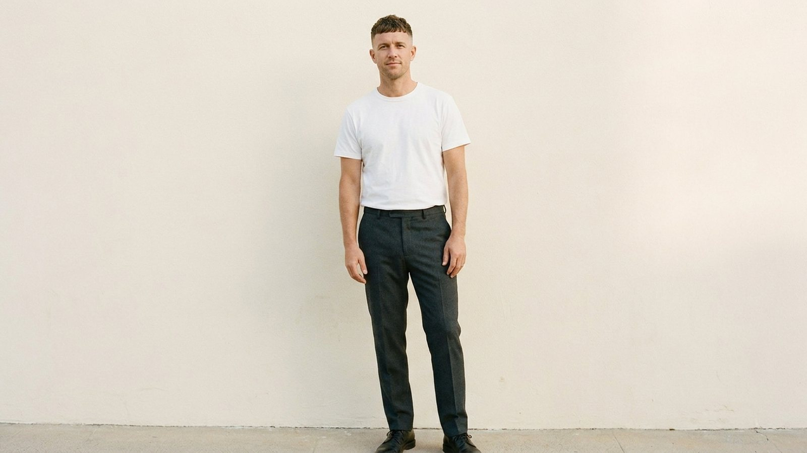

Start here
The fundamentals, whichever market you are in.

How to Become a Model: The Honest Guide From People Who Book Models
Learn how to become a model from casting directors and agents. Real requirements, digitals, agencies, costs, scams to avoid, and honest timelines.

How to Start a Modeling Career: The Steps in Order
The actual steps to start a modeling career, in order, from working agents and casting directors — category, digitals, agencies, castings and money.
How to Become a Model in Australia
How to become a model in Australia: the agencies, the boards, what to submit, realistic rates and timelines, and the scams specific to the AU market.
How to Become a Model With No Experience (What Agencies Actually Look For)
No experience? Good. Agencies expect none. Casting directors explain what they actually evaluate and your first realistic steps this week.

How Much Does It Cost to Become a Model? Real Numbers From the People Who Book Them
Real cost breakdowns for aspiring models: what to pay for, what should always be free, and the fees that signal a scam. From casting industry insiders.

How Much Do Models Make? The Pay Structure, From the People Who Write the Checks
How modeling pay actually works: day rates, usage fees, agency commission, and realistic income by category, from people who book and pay models.
How to Become a Successful Model: What Separates a Career From a Lucky Break
Casting directors explain how to become a successful model: the habits, business skills, and mindset that turn one booking into a lasting career.
Agencies
How representation works, who to approach, and what to avoid.
What Do Modeling Agencies Look For? The Answer From Agents
What modeling agencies actually look for in new faces, explained by working agents: measurements, look, age, professionalism and what gets you rejected.
How to Get Signed by a Modeling Agency: What Agents Actually Look For
How to get signed by a modeling agency, explained from the agent's side of the desk: scouting, digitals, submissions, contracts, and red flags.

How to Choose a Modeling Agency (What Insiders Look For)
Casting directors explain how to choose a modeling agency: agency types, how to vet bookers, scam red flags, and the questions to ask before signing.
Modeling Agencies Near Me: How to Find One That Is Actually Real
How to find legitimate modeling agencies near you, verify they are real, and submit properly — explained by working agents and casting directors.
Modelling Agencies in Australia: The Complete Guide
Every major modelling market in Australia explained by insiders: agencies by city, boards, submissions, rates, contracts and the scams to avoid.
Modelling Agencies in Sydney: How the Market Really Works
A working guide to modelling agencies in Sydney: who runs which boards, how open calls work, what to submit, and the red flags to walk away from.
Modelling Agencies in Melbourne: What Agents Look For
How modelling agencies in Melbourne actually work: the boards they run, open calls, what to submit, realistic rates, and the fees that signal a scam.
Modelling Agencies in Brisbane: An Insider Guide
Modelling agencies in Brisbane explained by industry insiders: boards, open calls, submissions, what the Queensland market books, and scams to avoid.
Modelling Agencies in Perth: How to Get Signed in WA
A practical guide to modelling agencies in Perth: which boards exist, how to submit, what WA clients book, realistic expectations, and red flags.
Castings & work
Where the bookings come from and how to handle the room.

Modeling Jobs: Where the Work Actually Comes From
Where modeling jobs actually come from, the categories that book most often, how rates and usage work, and how to spot the scams. From working bookers.
Open Casting Calls: What Really Happens in the Room
What happens at an open casting call, what to bring, what to wear, how you are actually assessed, and the safety rules that matter. From casting directors.
Model Casting Calls: What Really Happens, From the People Who Run Them
What model casting calls are, how to find legit ones, and what casting directors decide in seconds. Insider advice from the people who book models.

How Do Models Walk in Runway Shows? The People Who Cast Them Explain
Casting directors and runway producers explain how models really walk in shows: posture, stride, training, and what castings judge in ten seconds.
What Is a Runway Model? The Job, the Money and What It Actually Takes
What a runway model actually does, how the work differs from print and commercial modeling, real height and pay ranges, and how bookers decide.
What Is Commercial Modeling? The Job, the Pay and How It Actually Works
What commercial modeling actually is, how it differs from fashion modeling, real pay and usage terms, and how to get booked, from working agents.
Training
Whether to pay for classes, and how to avoid the schools that sell hope.
Modeling Classes: What They Teach, and Whether You Need Them
What modeling classes actually cover, what they cost, who genuinely benefits, and how to judge one — explained by working agents and casting directors.
Modeling Schools: What They Do, and How the Scams Work
What modeling schools do, how the classic modeling school scam is structured, what agencies think of them, and how to judge one before you pay.
Portfolio
Digitals, books, comp cards and everything agencies ask to see.

How to Make a Modeling Portfolio: What Agencies Actually Want to See
Casting directors explain how to make a modeling portfolio: the exact shots agencies want, what to leave out, and why you don't need a pricey shoot.
Modeling Portfolio Examples: What a Book That Gets Signed Actually Looks Like
Modeling portfolio examples explained image by image by the people who review them. Shot lists for beginner, fashion, commercial, fitness, and teen.
The Model Comp Card: What Actually Goes On It
What a model comp card is, exactly what goes on the front and back, the standard size and layout, and the mistakes that get cards thrown away.
Building a Model Portfolio Website That Works
How to build a model portfolio website that agents and clients actually use: structure, image selection, what to leave out, and safety essentials.
For parents
Child and teen modelling, and how to tell a real agency from a scam.
Child Modeling Agencies: What Parents Need to Know First
How child modeling agencies work, how to tell a real one from a scam, what it should cost, the legal protections, and how to submit safely.
Baby Modelling Agencies: An Honest Guide for Parents
How baby modelling agencies work, what they look for, the fees that signal a scam, the legal protections for infants, and how to submit safely.
How to Become a Child Model: A Parent's Honest Guide
How child modeling really works, from people who book kids. Agencies, work permits, Coogan accounts, scam red flags, and what it costs your family.
How to Become a Model at 16: The Insider Guide for Teens and Parents
How to become a model at 16, from casting directors and agents. Development contracts, safe digitals, and red flags, for teens and parents.
Specialisms
Boards with their own clients, requirements and rates.
Plus Size Modeling Agencies: What Curve Boards Actually Want
How plus size and curve modeling boards actually work: measurements agencies want, which agencies run curve boards, submissions, rates and red flags.

How to Become a Male Model: An Insider's Guide From the Booking Side
Learn how to become a male model from casting directors and agents. Requirements by category, digitals, portfolios, and how men actually get signed.
How to Become a Fitness Model: A Casting Insider's Guide
Learn how to become a fitness model from casting directors and agents. What brands really look for, portfolio tips, agencies, and realistic pay.
How to Become a Hand Model: What Casting Directors Actually Look For
How to become a hand model, from the people who book them: what makes a bookable hand, shooting digitals at home, parts agencies, care routines, and pay.
How to Become a Freelance Model: The Insider's Guide
How to become a freelance model, from the people who book them: finding legit work, setting rates, contracts, and staying safe without an agency.